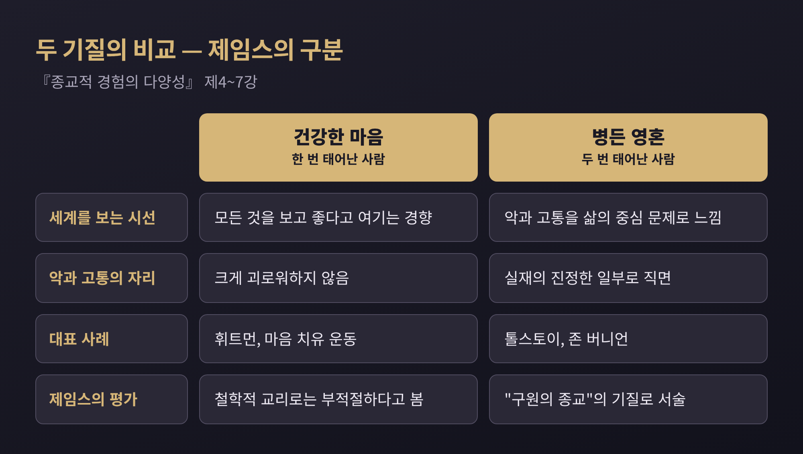
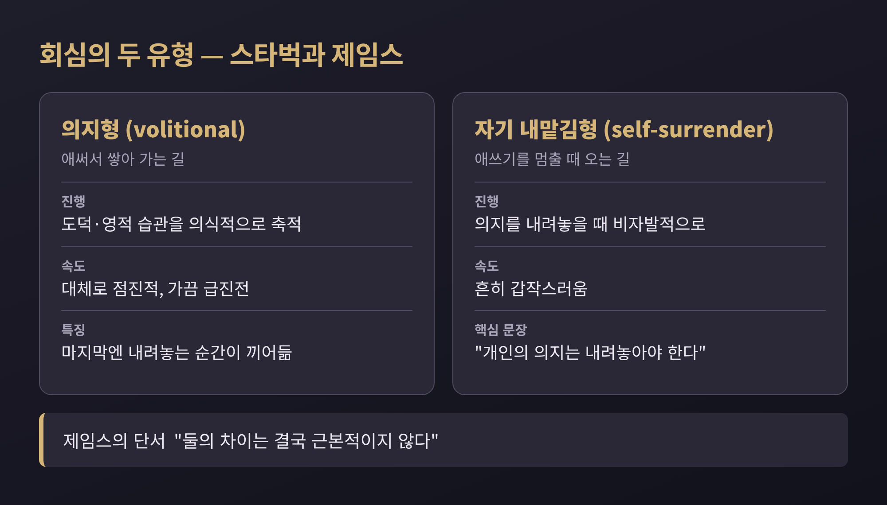
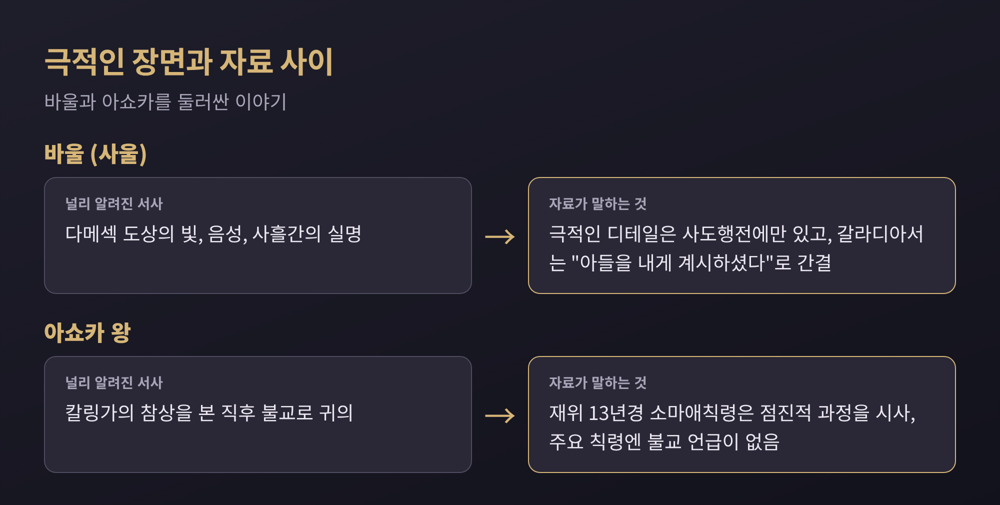
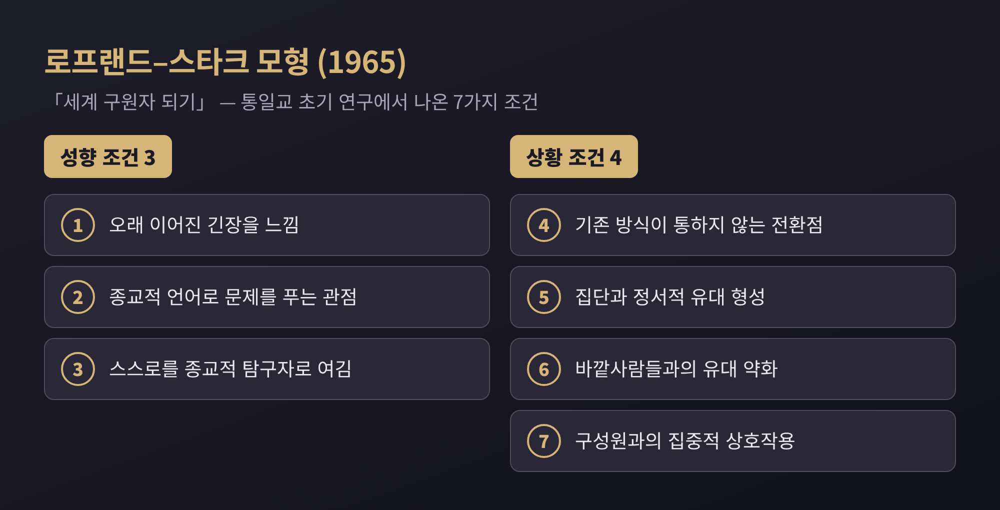
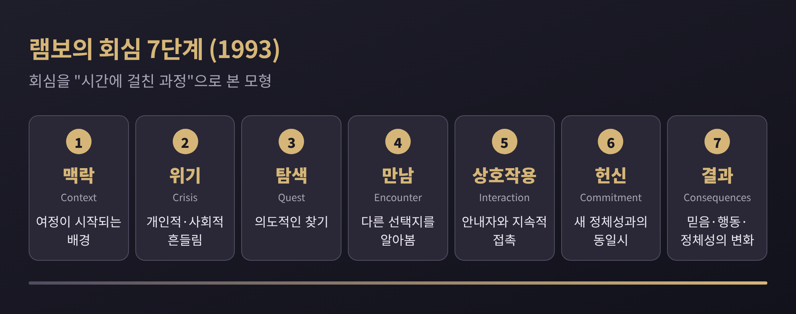

세 줄 요약
1. 윌리엄 제임스는 회심을 "분열되고 불행한 자아가 통일되는 과정"으로 보았고, 갑작스러운 경우와 점진적인 경우를 모두 다루었습니다.
2. 바울과 아쇼카의 이야기는 극적인 한 장면으로 기억되지만, 자료를 따라가 보면 훨씬 복잡한 과정이 드러납니다.
3. 사회학자들은 이를 '믿음의 사건'이 아니라 '관계와 시간의 과정'으로 읽습니다.
이번 글에서는 종교적 회심이라는 현상을 비교종교학과 종교심리학의 눈으로 살펴보려 합니다. 어느 신앙이 옳은지를 가리는 글이 아닙니다. 사람의 마음이 어떻게, 어떤 조건에서 방향을 바꾸는지를 여러 전통의 사례로 정리해 보겠습니다.
1902년에 나온 『종교적 경험의 다양성』은 에든버러 대학에서 1901년부터 1902년까지 이어진 기퍼드 강연 20강을 묶은 책입니다. 제임스는 교리와 제도를 일부러 비켜 갔습니다. 개인이 직접 겪은 종교 경험만 들여다보았습니다.
그가 먼저 세운 구분은 두 기질입니다. '건강한 마음'은 모든 것을 보고 그것이 좋다고 여기는 경향입니다. 월트 휘트먼의 시와 당시의 마음 치유 운동이 그 예로 등장합니다. 이쪽 사람들은 제임스가 프랜시스 뉴먼에게서 빌린 표현으로 '한 번 태어난 사람'에 가깝습니다. 자기 불완전함 때문에 크게 괴로워하지 않는다는 뜻입니다.
반대편이 '병든 영혼'입니다. 악과 고통을 삶의 일부가 아니라 중심 문제로 느끼는 사람들입니다. 제임스는 톨스토이가 남긴 고백, 곧 삶을 떠받치던 무언가가 안에서 부러졌다는 말을 이 유형의 대표 사례로 실었습니다. 존 버니언은 스스로가 "짐이자 공포"였다고 적었습니다. 이런 이들의 종교는 '구원의 종교'이며, 실재하는 삶으로 태어나려면 비현실적인 삶에 대해 먼저 죽어야 한다고 제임스는 썼습니다. 이를 '두 번 태어난 사람'이라 부릅니다.

제임스는 건강한 마음이 철학적 교리로는 부적절하다고 보았습니다. 그것이 설명을 거부하는 악한 사실들 역시 실재의 진정한 일부라는 이유입니다. 다만 기질을 두고 우열을 단정한 것은 아닙니다. 기질이 어두운 관찰자와 낙천적인 관찰자는 종교 생활의 서로 다른 면을 강조할 수밖에 없다고, 그는 같은 책에서 말했습니다. 일부 해설자는 제임스가 사실은 병든 영혼 쪽에 더 마음을 두었다고 읽는데, 이는 해석의 영역입니다.
제임스는 아홉 번째 강연에서 '회심하다, 거듭나다, 은혜를 받다, 확신을 얻다' 같은 표현들이 모두 한 과정을 가리킨다고 정리했습니다. 분열되고 불행했던 자아가 종교적 실재를 더 단단히 붙들면서 통일되고 행복해지는 과정입니다.
그는 이 과정을 의식의 '뜨거운 자리'가 이동하는 일로 설명했습니다. 변두리에 있던 관념이 마음의 중심으로 들어와 행동을 이끌기 시작하면, 그 사람은 전환을 이룬 셈입니다. 왜 하필 그 순간 그 관념이 중심이 되는가는 심리학이 다 설명하지 못한다고 그는 솔직히 인정했습니다. 상당 부분은 의식 아래에서 서서히 익는 과정이라고 보았습니다.
방식은 크게 둘로 나뉩니다. 심리학자 스타벅의 연구를 따라 제임스는 '의지형'과 '자기 내맡김형'을 구분했습니다.

의지형은 도덕적·영적 습관을 의식적으로 쌓아 가는 길이라 대체로 점진적입니다. 내맡김형은 애쓰기를 멈출 때 변화가 찾아오며, 흔히 갑작스럽습니다. 스타벅은 "개인의 의지는 내려놓아야 한다"고 썼습니다. 잊은 단어를 억지로 떠올리려 할수록 막히다가, 잊고 있으면 불쑥 떠오르는 경험에 비유하면 이해가 쉽습니다.
그렇다고 제임스가 이 둘을 칼로 자르듯 나눈 것은 아닙니다. 둘의 차이는 결국 근본적이지 않다고 했습니다. 의지형에도 마지막에는 내려놓는 순간이 끼어든다는 것입니다. 스타벅의 통계는 또 하나를 보여 줍니다. 보통의 복음주의적 전환은 대개 14세에서 17세 사이, 곧 청소년기의 영적 성장과 닮아 있었고, 그것은 그 시기를 단축하는 대신 강도를 높인다는 것이 스타벅의 결론이었습니다.
고전적인 '갑작스러운 회심'의 원형으로는 흔히 바울이 꼽힙니다. 사도행전 9장은 다메섹으로 가던 길에 승천한 예수의 환상을 보고, 음성을 듣고, 사흘간 눈이 멀었다가 아나니아의 안수로 시력을 되찾고 세례를 받는 장면을 전합니다.
그런데 이 장면은 바울 본인의 편지에는 없습니다. 갈라디아서 1장에서 바울은 하나님이 "그의 아들을 내게 계시하시기를 기뻐하셨다"고만 쓰고, 빛이나 실명이나 아나니아는 말하지 않습니다. 극적인 디테일은 사도행전에만 있는 셈입니다. 연대도 사도행전에는 없고, 편지를 바탕으로 대략 서기 31년에서 36년 사이로 추정할 뿐입니다.
이 사건을 어떻게 부를 것인가를 두고 학계의 입장도 갈립니다. 신약학자 크리스터 스텐달은 1961년 미국심리학회 강연에서, 바울이 죄책감에 시달리다 안도하는 서구식 내면 드라마를 겪은 것이 아니라고 주장했습니다. 그가 보기에 다메섹 체험은 '종교를 바꾼' 일이 아니라 예언자적 소명에 가깝습니다. 반론도 있습니다. 서신이 박해자였던 과거와 이후의 삶을 뚜렷이 대비하는 점, 고린도전서 15장 9절의 언급을 근거로, 스텐달의 해석이 20세기의 심리학적 관심을 투영한 것이라는 비판이 나왔습니다. 한편 존 보커, 앨런 시걸, 다니엘 보야린은 이 체험을 초기 유대 신비주의 전통의 맥락에서 읽고, 티모시 처칠은 그 해석이 맞지 않는다고 반박합니다.
여기서 하나는 분명합니다. 같은 사건이 심리학, 역사학, 신비주의 연구의 렌즈에 따라 전혀 다르게 보인다는 점입니다. 어느 해석이 신학적으로 옳은가는 이 글이 다룰 문제가 아닙니다.
기원전 3세기 마우리아 제국의 아쇼카 왕 이야기도 비슷한 굴곡을 지니고 있습니다. 즉위 8년째에 치른 칼링가 정복을 두고 암벽 칙령 13호는 약 15만 명이 추방되고 10만 명이 전사했으며, 그보다 몇 배가 목숨을 잃었다고 적었습니다. 아쇼카는 이 정복에 후회를 느꼈다고 직접 밝혔고, 무력 대신 '법(담마)에 의한 정복'을 말했습니다.
널리 퍼진 서사는 이렇습니다. 전쟁의 참상을 본 왕이 충격을 받고 불교로 귀의했다는 것입니다. 하지만 자료를 나란히 놓으면 그림이 달라집니다.

재위 13년경의 소마애칙령에는 2년 반 넘게 재가 신자였지만 최근까지 정진이 크지 않았다는 취지의 고백이 있습니다. 점진적 과정을 시사하는 대목입니다. 스리랑카 전승은 귀의를 전쟁 이전으로 보고, 불교 문헌 『아쇼카아바다나』는 칼링가가 아닌 개인적 번민에 따른 점진적 변화로 전합니다. 주요 칙령에는 붓다도, 승가도, 불교라는 말도 나오지 않습니다. 영국 학자 바샴은 아쇼카의 개인 신앙은 불교였지만 그가 공식적으로 장려한 담마는 불교 그 자체가 아니었다고 보았습니다.
칙령의 후회 자체를 어디까지 믿을지도 논쟁거리입니다. 칼링가 지역에 세운 칙령에는 후회의 내용이 빠져 있는데, 이를 정치적 판단으로 읽는 시각이 있고, 참상의 묘사가 먼 독자를 감동시키려는 정치적 선전에 가깝다고 보는 시각도 있습니다. 분명한 것은 하나입니다. 도시를 돌며 불탄 집과 시신을 보았다는 이야기는 후대의 전설이고, 칙령은 당대의 1차 사료라는 점입니다.
제임스가 개인의 내면을 보았다면, 20세기 중반 이후의 사회학자들은 그 변화를 둘러싼 관계망에 주목했습니다. 대표적인 것이 존 로프랜드와 로드니 스타크가 1965년 「세계 구원자 되기」에서 내놓은 모형입니다. 통일교의 초기 미국 활동을 연구한 로프랜드의 박사 연구에서 나왔고, 일곱 가지 조건으로 구성됩니다.

세 가지는 성향 조건입니다. 오래 이어진 긴장을 느끼는 것, 종교적 언어로 문제를 풀려는 관점이 있는 것, 스스로를 종교적 탐구자로 여기는 것입니다. 네 가지는 상황 조건입니다. 기존의 삶의 방식이 더는 통하지 않는 전환점에 이르는 것, 집단 구성원과 정서적 유대가 생기는 것, 바깥사람들과의 유대가 약해지는 것, 구성원들과 집중적으로 어울리는 것입니다. 교리의 설득력보다 관계가 앞서 있다는 점이 눈에 띕니다.
이 모형은 이후 검증에서 특히 성향 조건 쪽에 경험적 문제가 드러났습니다. 로프랜드 본인도 1978년에 이 모형이 널리 적용되도록 만든 것이 아니라 특정 운동을 위한 모형을 어떻게 세울 수 있는가의 한 예라고 밝혔습니다. 그는 훗날 제자들에게 과정을 뒤집어, 사람들이 어떻게 스스로를 개종시키는가를 보라고 권했습니다. 그 뒤로 연구 흐름은 수동적 피해자 모형에서 숙고하는 주체 모형으로 옮겨 갔습니다. 학계에서는 이를 '능동적 개종자' 패러다임으로 부릅니다.
루이스 램보의 단계 모형은 이 흐름을 한 장에 담아냅니다. 1993년 저서에서 램보는 이 과정을 맥락, 위기, 탐색, 만남, 상호작용, 헌신, 결과의 일곱 단계로 정리했습니다.

램보는 인터뷰에서 이것이 "시간에 걸친 과정"이며 연애와 비슷하다고 말했습니다. 처음은 강렬하지만 이어 가려면 신뢰와 헌신이 필요하다는 것입니다. 위기는 불행일 수도, 감사하고 싶을 만큼 좋은 일일 수도 있습니다. 헌신 단계의 모습도 전통마다 다릅니다. 과거와의 단절을 요구하는 곳에서는 다리를 태우는 의례가 있고, 관용적인 환경에서는 과거를 꼭 부정하지 않는 채 새 정체성을 확인합니다. 램보의 사례 가운데에는 교회 오르간 연주자인 남자친구 때문에 예배에 갔다가 끌린 유대인 여성도 있습니다. 위기도 만남도 대단히 평범한 모양으로 올 수 있다는 뜻입니다.
전통마다 귀의의 문턱은 다릅니다. 불교에서는 붓다, 담마, 상가에 귀의하는 삼귀의를 외웁니다. 이슬람에서는 샤하다를 암송하며, 모든 사람이 본래 무슬림으로 태어난다는 관념 때문에 개종자를 '돌아온 이'라 부르기도 합니다. 기독교에서는 세례가, 유대교에서는 교파마다 절차가 다른 기유르가 관문입니다. 힌두교에는 중앙 권위도 보편적 절차도 없습니다. 이 가운데 어느 문턱이 더 참된가를 묻는 것은 비교종교학의 일이 아닙니다.
개인의 결단만이 전부도 아니었습니다. 버마의 아노라타 왕이 11세기에 나라 전체를 상좌부 불교로 이끈 사례처럼, 통치자와 함께 공동체가 옮겨 간 집단 개종은 역사에 흔했습니다. 세금이나 정치적 대표성 같은 실용적 동기가 섞이기도 했습니다. 강제로 옮겨 간 역사도 따로 있었기에, 오늘날 세계인권선언 18조는 종교를 바꿀 자유를 명시하고 있습니다.
제임스 연구에도 한계는 있습니다. 개신교 중심의 사례, 제도와 문화가 경험을 빚는 방식에 대한 소홀함, 개인 내면에 대한 지나친 비중이 대표적인 비판입니다. 이 분야 연구 전반도 북미 개신교와 대학생 표본에 치우쳐 있다는 지적을 받습니다. 아직 완결된 이론은 아닌 셈입니다.
정리하면 이렇습니다. 이 전환은 한 순간의 번쩍임으로 기억되곤 하지만, 연구자들이 자료를 따라가 보면 그 앞뒤에 긴 시간이 놓여 있습니다. 제임스는 그것을 마음의 중심이 옮겨 가는 일로, 사회학자들은 관계와 단계의 과정으로 읽었습니다.
결국 남는 질문은 하나입니다. 우리가 '극적인 장면'이라 부르는 것은 변화 그 자체일까요, 아니면 오랜 변화를 이야기하기 좋게 압축한 모양일까요. 어느 쪽에 가까운지는 읽는 분께서 각자 생각해 보시길 권합니다.